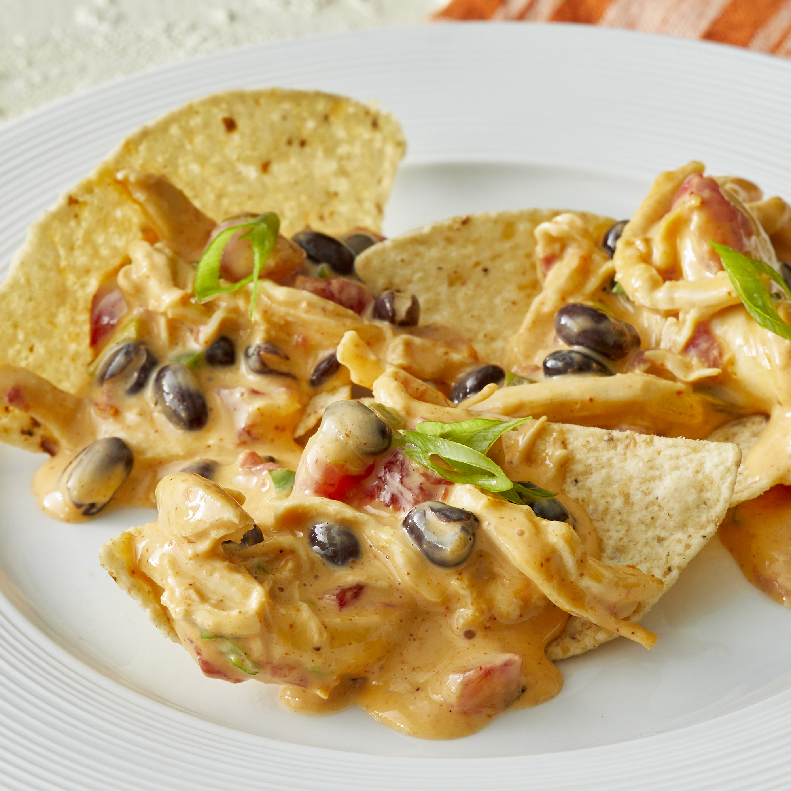

Chicken Nacho Dip

**Great Party Recipe? You tell me!**
I have never made this recipe, but it looks like it has to be good!
Ingredients:
- 1 (14oz) can diced tomatoes with green chiles, drained
- 1 (1 lb) loaf velveeta, cubed
- 2 lg cooked boneless, skinless chicken breast halves, shredded
- 1/3 cup sour cream
- 1/4 cup diced green onion
- 1 1/2 tablespoons taco seasoning mix
- 2 tablespoons minced jalapeno pepper, or to taste
- 1 cup black beans, rinsed and drained
Instructions:
- Place diced tomatoes, processed cheese, chicken, sour cream, green onion, tace seasoning, and jalapeno pepper into slow cooker.
- Cook on high, stirring occasionally until the cheese has melted and the dip is hot, 1 to 2 hrs.
- Stir in the black beans, and cook 15 more minutes. If it is too thick, thin with small amounts of milk.